![]()
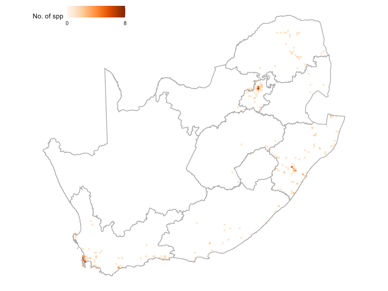

78
of 2214 species assessed are
Threatened
of 2214 species assessed are
Threatened
60
of 2214 species assessed are
Rare or Critically Rare
of 2214 species assessed are
Rare or Critically Rare
1303
species of spiders (58%) are
Endemic
species of spiders (58%) are
Endemic
Key findings
South Africa has a rich diversity of spider species, with 2265 described species1, representing 4% of the world’s spiders.
A comprehensive assessment of 2214 spider species was conducted for the first time between 2016 and 2019 using the IUCN Red List Categories and Criteria to classify their risk of extinction and represents a global first and a pioneering effort in applying IUCN Red List criteria to a mega-diverse invertebrate group.
The spider assessment was made possible through the 22-year South African National Survey of Arachnida (SANSA) initiative, which resulted in significant improvements to the knowledge base: a 33% increase in described species, and during this project, there was a 350% rise in specimen accessions in the national collection.
Of the assessed species, only 78 of the species (4%) were assessed as threatened.
Most species (1419 spp., 64%) are widely distributed with no known threats and are of Least Concern.
However, almost a third of the species (707 spp., 32%) are Data Deficient.
Endemism is high, and 1303 species (58%) are only found in South Africa, representing ~2% of the world’s spiders.
When conducting the IUCN Red List Index (RLI) assessment, spiders have the highest RLI score compared to other taxonomic groups in South Africa, resulting in it being the least threatened taxonomic group.
The major threats to spiders are habitat loss due to fire, overgrazing, invasive plants, mining, agricultural practices, and urban development.
Threat status, trends and pressures
- Threat status
In 2016, South Africa assessed 2214 spider species for the first time using the IUCN Red List categories and criteria, which measure extinction risk2. Only South African species were included; Eswatini and Lesotho were excluded from the assessment. Of the assessed species, 78 (4%) were threatened with extinction: 23 are Critically Endangered (CR), 24 are Endangered (EN), and 31 are Vulnerable (VU). No species were found to be extinct or possibly extinct.
Highly threatened spiders occur in the three major urban centers of South Africa (Western Cape, Gauteng and KwaZulu-Natal major metropolitan areas). This could be an indication of sample bias, but also identifies areas that have lost large areas of habitat to urban expansion (Figure 1). Some species have very restricted ranges but face no anthropogenic threats. These are listed under South Africa’s national rarity categories: Rare (extent of occurrence <500 km²) or Critically Rare (known from a single location). Sixteen species were classified as Critically Rare and 44 species as Rare. Although such species qualify as Least Concern under the IUCN system, they remain a priority for national conservation and are included as taxa of conservation concern along with threatened, Near Threatened and Data Deficient species.
Most species (1419; 63%) are widespread, face no known threats, and are assessed as Least Concern (Figure 2). A large proportion (675; 30%) are Data Deficient, highlighting the need for more research, particularly providing more detailed taxonomic descriptions, describing unknown sexes and providing additional distribution data through field sampling and examination of museum material (Box 1).
Endemism is high, with 1325 species (59%) found only in South Africa, representing 2% of global spider diversity. Of the 72 spider families recorded, Salticidae (jumping spiders) is the most species-rich (354), followed by Gnaphosidae (195) and Thomisidae (143)1. Because of its size, Salticidae also has the highest number of threatened (6) and Data Deficient (98) species.
However, the greatest conservation concern lies with smaller, cryptic species in isolated habitats such as caves and fragmented habitats. Families such as Pholcidae, Archaeidae, and Corinnidae each include four threatened species. Families with the highest numbers of Rare or Critically Rare species are Pholcidae (18), Salticidae (5) and Drymusidae (4)2.
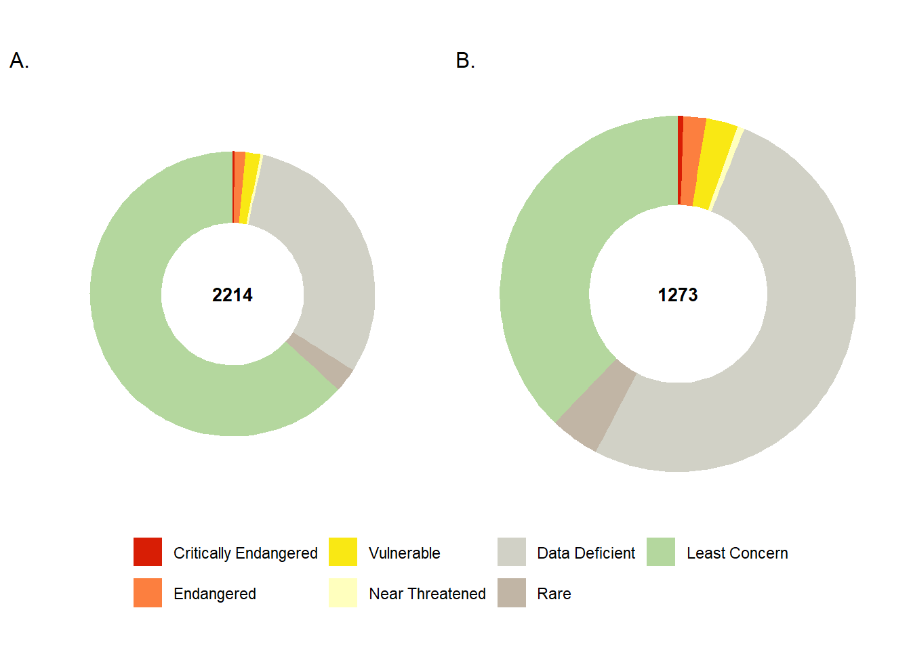
| Taxon | Critically Endangered | Endangered | Vulnerable | Near Threatened | Data Deficient | Rare | Least Concern | Total |
|---|---|---|---|---|---|---|---|---|
| Overall spiders | 6 | 26 | 37 | 8 | 675 | 60 | 1402 | 2214 |
| Endemic spiders | 6 | 26 | 37 | 8 | 657 | 57 | 482 | 1273 |
- Trends (RLI)
The trend in species status over time was measured using the globally recognized indicator, the IUCN Red List Index(RLI)butchart2004?. The RLI value ranges from 0 to 1, and the lower the value, the faster the taxonomic group is heading towards extinction – i.e., if the value is 1, all taxa are Least Concern, and if the value is 0, all taxa are extinct. The RLI value for spiders in South Africa was calculated in 2020 and included 2214 species. The RLI value is 0.994, and relative to other taxon groups assessed in South Africa, spiders have the highest RLI value (Figure 4). Since only one assessment has been conducted for spiders, it is not possible to determine the trend in extinction risk for this group.
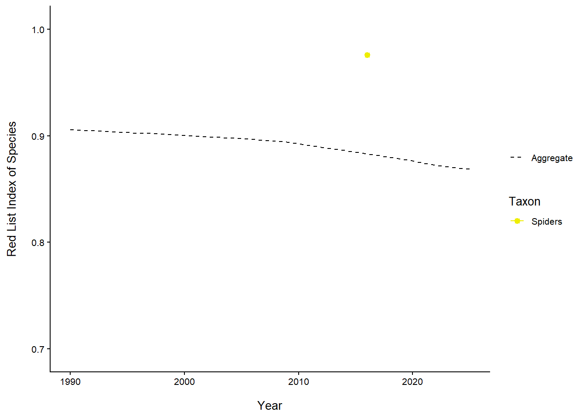
- Pressures
Spiders face an array of threats—both natural and human-driven (Figure 4). Research has shown that habitat loss caused by fire, overgrazing and invasive alien species infestations has a direct impact on spider populations, causing local lossesdippenaar-schoeman2015a?. Agriculture, forestry, and mining are the leading causes of habitat loss for spiders. This is especially critical for ground-dwelling and endemic species with poor dispersal abilities. In South Africa, many spider species are highly localised and endemic to specific biomes, such as the Fynbos4, with 28% endemic species to this biome, and the Savanna5, with 30% of the species endemic. Ground-dwelling spiders are particularly vulnerable to changes in their habitat and often struggle to recolonise areas after disturbance due to their limited dispersal capabilities, making them more prone to local extinction.
Spiders are present in relatively high numbers in agroecosystems; however, it has been shown that they are negatively impacted by pesticide usedippenaar-schoeman2013a?. Thus far, 51 families from 413 species have been recorded from crops in South Africa, and five agrobiont species have been identified that play an important role as natural control agents of pests. However, chemical use can directly kill spiders or disrupt their prey base. Integrated pest management (IPM) and organic farming are recommended to reduce chemical exposure that harms spiders and their prey. Altered temperature and rainfall patterns (climate change) can affect spider distribution, reproduction, and prey availability, and they may be severely impacted by drought.
Some spiders are threatened due to poaching and are used as pets, for example, the species in the Theraphosidae family (baboon spiders). Regulations need to be enforced to prevent the overcollection of charismatic species like baboon spiders for the pet trade.

Knowledge gaps
A significant portion of the South African spider fauna remains undescribed. In the Cape Floristic Region, 24% of species are classified as Data Deficient, and two families (Synotaxidae and Theridiosomatidae) are only known from undescribed species. Studies on mygalomorph trapdoor spiders (e.g., Stasimopus, Ancylotrypa, Galeosoma) show taxonomic resolution as low as 15–29%, indicating high uncertainty in species delimitation.
Sampling bias and geographic gaps are a concern. Spider records are heavily concentrated in the eastern and coastal regions of South Africa, with North West, Northern Cape and Mpumalanga province remaining undersampled2 111. These sampling biases impede conservation assessments and ecological modelling.Making use of citizen science to contribute to observation both helps fill sampling gaps and also raises awareness (Box 3).
NoteBox 3. Calling all citizen scientists!
To contribute to the future Red List assessments and monitoring of spiders, join iNaturalist!
New to iNaturalist (or never heard of it) and want to play along? Watch these video tutorials to get started, and sign up on the iNaturalist website or download the app on your smartphone.
To see how valuable your nature photographs can be, watch this inspiring TED talk.
Morphological variation is poorly understood due to limited sampling, making it difficult to confidently define species boundaries. Despite SANSA’s efforts, many natural history collections lack comprehensive coverage or standardised metadata, limiting their utility for taxonomic synthesis, as large numbers of specimens in collections remain unidentified due to a lack of spider taxonomists. For example, a recent meta-analysis of South African spider data from seven collections found that only slightly more than half of the ~121 000 records had been identified to species level, indicating a major taxonomic gap in the available data11. Presently, there is only one spider taxonomist employed at a natural history collection. The shortage of taxonomic expertise will have direct consequences for resolving Data Deficient taxa and developing taxonomic products related to species descriptions, revisions, and the integration of molecular tools.
Addressing the taxonomic impediment for spiders in South Africa requires a multi-pronged strategy that blends capacity building, infrastructure development, and policy integration. Here is a breakdown of effective solutions:
Expansion of taxonomic capacity, by creating employment for specialist taxonomists and providing the required skills transfer opportunities (Box 4).
Accelerate species descriptions through building capacity and collaborative research, particularly with international partners.
Integrate molecular tools and promote DNA barcoding and phylogenetics to resolve species boundaries, especially in morphologically conservative groups.
Develop a national spider barcode reference library, linked to voucher specimens and ecological metadata. Currently, sequence data on South African spiders (~10 600 specimens processed, mainly COI-5P) is scattered among several projects with very contrasting levels of taxonomic resolution.
Digitize and standardise collections: with high-resolution imaging, georeferencing, and standardized metadata.
Ensure the SANSA database evolves to be more accessible by creating a centralized database accessible to researchers, conservationists, and policymakers.
Encourage citizen science platforms like iNaturalist to crowdsource observations and expand distribution data (Box 3).
Relax permit conditions so that members of the public can sample specimens without fear of prosecution, particularly those linked to photographic observations, to enable species-level identifications.
Link taxonomic work to spatial tools for species conservation, e.g. Key Biodiversity Areas (KBAs) and the DFFE Screening tool for Environmental Impact Assessments (EIAs) to justify funding and urgency. This can be further linked to understanding biodiversity data and the role it could play in South Africa’s biosecurity with regards to emerging pests and diseases.
Foster international collaboration, partner with global arachnological networks for training, data sharing, and joint revisions.
Invite and fund visiting taxonomists to work on South African material and co-author species descriptions.
Facilitate the training of taxonomists from other African countries to expand the skills base on the continent.
NoteBox 4. Profile on Data Deficient spiders of South Africa
Although South Africa has the richest described spiders on the continent that has been researched the most thoroughly in the past, many families have never been subjected to revision and continue to present a considerable identification challenge to taxonomists and ecologists alike. Surveys and research have shown that in several families, a large proportion of species remain undescribed. For example, the National Collection of Arachnida has around 45% of specimens that are still unidentified.
Preliminary research on the following families reveals that many species remain unidentified. All images are credited to © Peter Webb, if not, it is indicated.
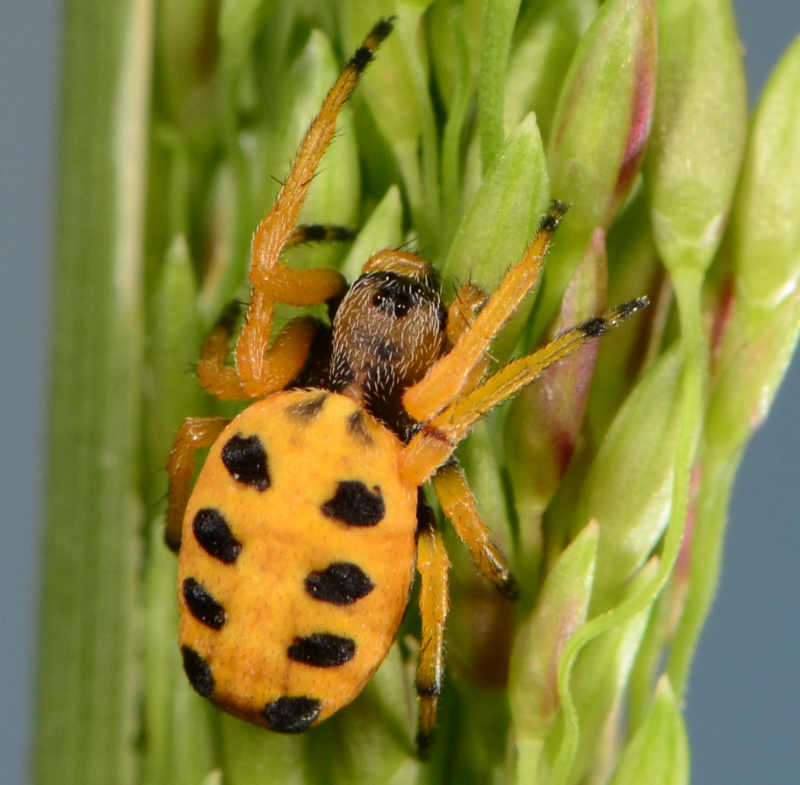
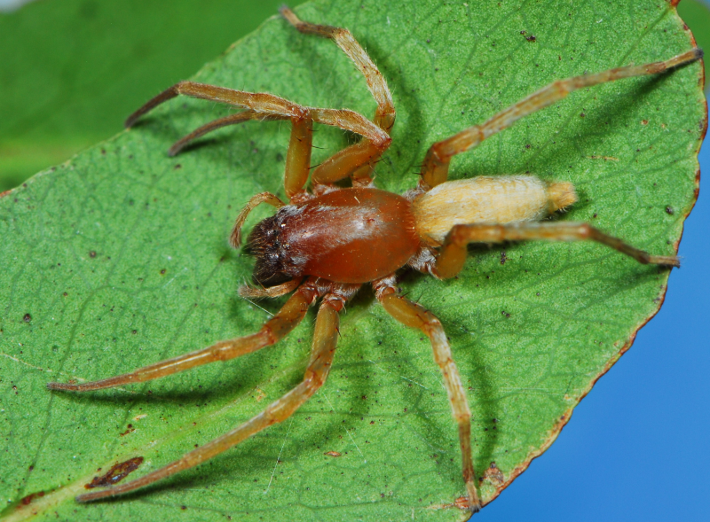
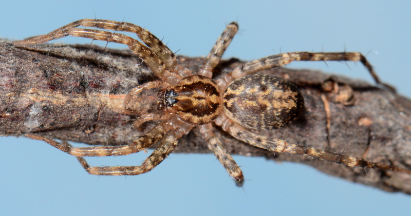
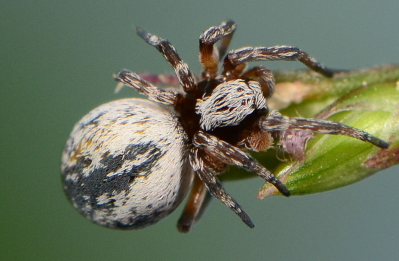
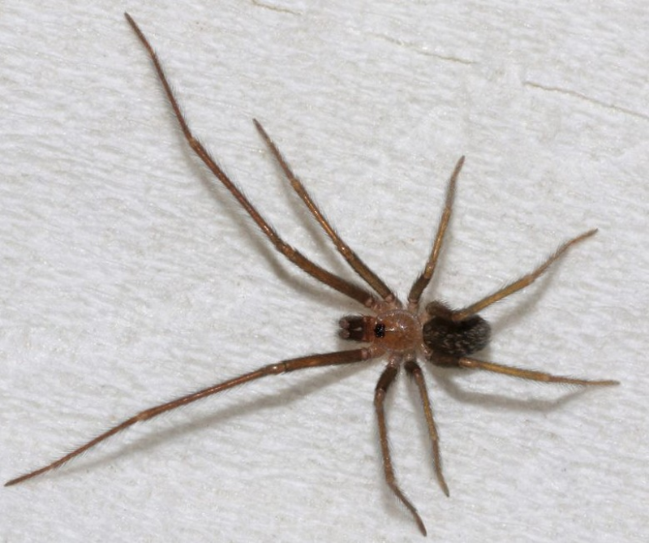
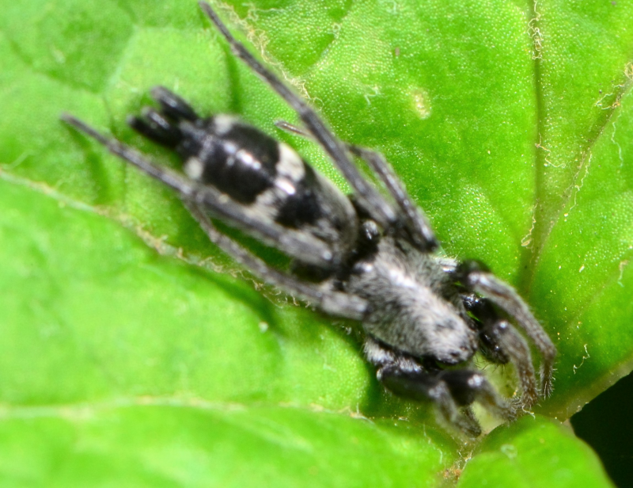
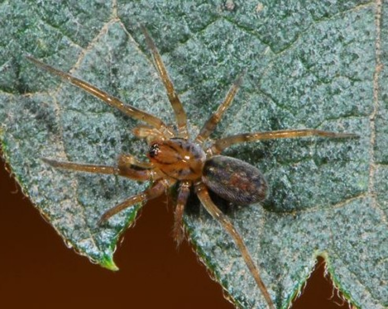
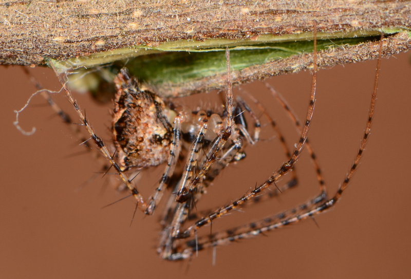
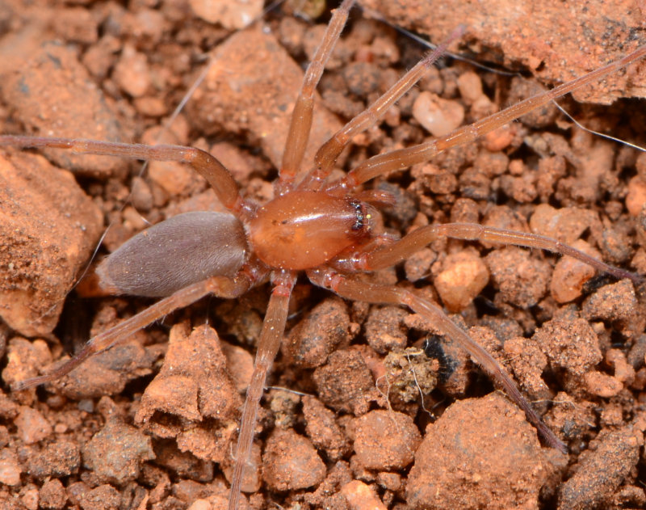
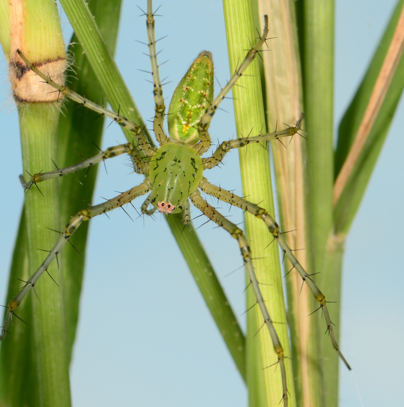
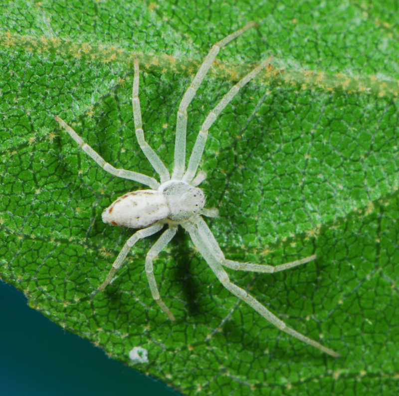
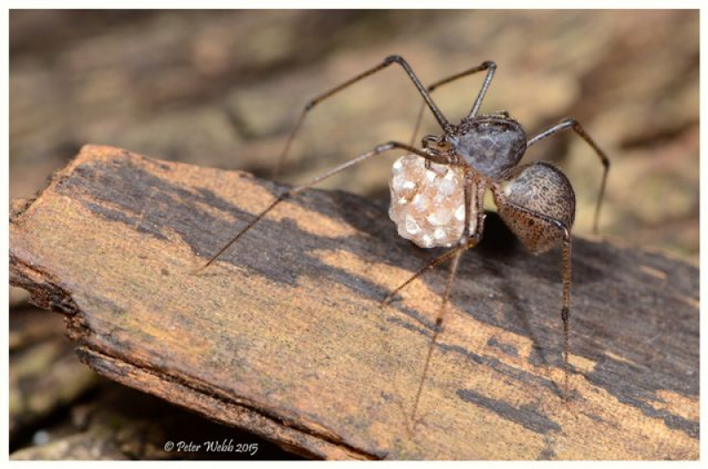

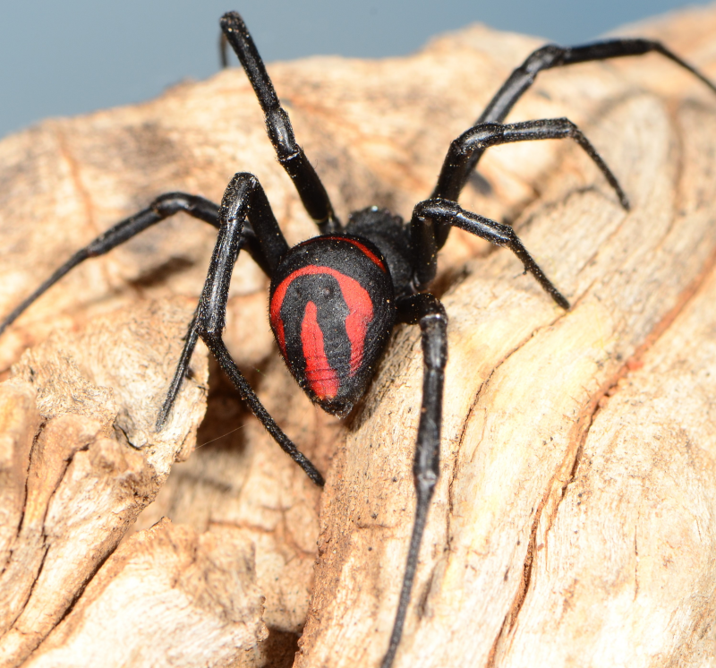
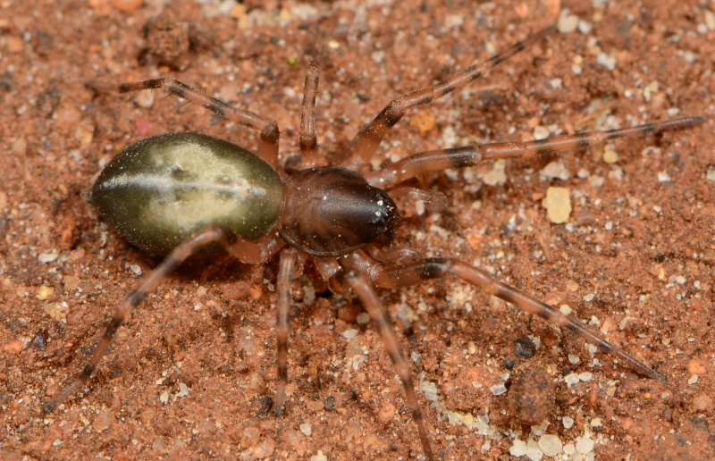
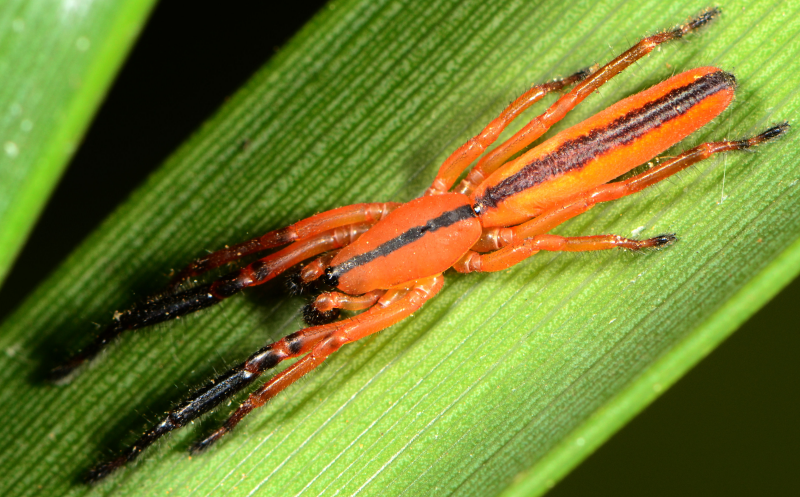
Acknowledgements
The first IUCN Red List assessment of South African spiders was conducted between 2016 and 2019, as a collaborative project between the South African National Biodiversity Institute (SANBI), the Agricultural Research Council, the University of the Free State and the University of Venda (formerly University of Limpopo).All the field workers, museum staff and other members contributing to completion of the assessment (Table 1)
| Contributor | Affiliation |
|---|---|
| Eugene Modiseng | Agricultural Research Council |
| Mohale Mokoena | South African National Biodiversity Institute |
| Esethu Nkibi | South African National Biodiversity Institute |
| Keenan Meissenheimer | South African National Biodiversity Institute |
| Sma Chiloane | Agricultural Research Council |
| Reginald Christiaan | South African National Biodiversity Institute |
Approach
The first IUCN Red List assessment of South African spiders was conducted between 2016 and 2019, as a collaborative project between the South African National Biodiversity Institute (SANBI), the Agricultural Research Council, the University of the Free State and the University of Venda (formerly University of Limpopo). This assessment represents a pioneering effort in applying IUCN Red List criteria to a mega-diverse invertebrate group and was made possible through the 22-year South African National Survey of Arachnida (SANSA) initiative, which resulted in significant improvements to the knowledge base: a 33% increase in described species and a 350% rise in specimen accessions in the ARC’s National Collection of Arachnida (NCA).
Data Sources and Methods
The assessment utilized data from the First Atlas of South African Spiders3, which compiled information from two primary sources: the National Collection of Arachnida (NCA) at the Agricultural Research Council – Plant Health and Protection (ARC-PHP) in Roodeplaat, Pretoria (with over 60,000 records) and published taxonomic literature from 17 museum collections.
The distribution of occurrence records across South Africa, Lesotho and Swaziland was visualized using quarter-degree, degree-square and density kernel plots for all 76,069 records. However, records in the NCA that were not identified to species level were excluded from the Red List assessments, reducing the analytical dataset to 23,827 species-level records covering 2,253 known South African spider species.
Calculation of parameters
The calculation of Red List parameters was performed using the R package red (v1.6.3)12. Spatial analyses on observed occurrences used functions for calculating Extent of Occurrence (EOO), Area of Occupancy (AOO), and elevational range. EOO was calculated as the minimum convex polygon around all occurrences, while AOO was determined by the number of 2 km² cells occupied. When EOOs were smaller than the AOO, they were made equal. Assessments were drafted as per the IUCN documentation standards and reviewed by relevant experts.
Assessment Criteria and Limitations
Notably, all Red List assessments relied exclusively on IUCN criteria B (geographic range) or D (population size), as these could be evaluated from available distribution data and inferred threats. The other IUCN criteria (A, C, and E) require empirical evidence of population dynamics and trends—a critical data gap known as the Prestonian shortfall—which remains unavailable for most spider species. This methodological constraint highlights the need for long-term monitoring programs to provide insights into population dynamics.
Recommended citation
Dippenaar-Schoeman, A., Lyle, R., Raimondo, D.C., Sethusa, T., Foord, S., Haddad, C., Lotz, L., Hendricks, S.E., & Van Der Colff, D. 2025. Spiders. National Biodiversity Assessment 2025. South African National Biodiversity Institute. http://nba.sanbi.org.za/.
References
1. A. S., D.-.S. et al. 2023. Checklist of the spiders (araneae) of south africa. African Invertebrates 64: 221–289. https://doi.org/10.3897/AfrInvertebr.64.111047151
2. Foord, S.H. et al. 2020. The south african national red list of spiders: Patterns, threats, and conservation. Journal of Arachnology 48: 110–118. https://doi.org/10.1636/0161-8202-48.2.110
3. A. S., D.-S. et al. 2010. First atlas of the spiders of south africa (arachnida: araneae. South African National Survey of Arachnida Technical Report version 1: 1160. https://doi.org/10.5281/zenodo.7628809
4. Dippenaar-Schoeman, A.S. et al. 2024. The faunistic diversity of spiders (arachnida: Araneae) of the south african cape floristic kingdom. Transactions of the Royal Society of South Africa 79: 1–22. https://doi.org/10.1080/0035919X.2024.2324912152
5. Foord, S.H. et al. 2011. The faunistic diversity of spiders (arachnida, araneae) of the savanna biome in south africa. Transactions of the Royal Society of South Africa 66: 170–201. https://doi.org/10.1080/0035919X.2011.639406
6. N., I.U.C. 2025. Threats classification scheme (version 3.3). The IUCN red list of threatened species.
7. Haddad, C.R. et al. 2015. Effects of a fast-burning spring fire on the ground-dwelling spider assemblages (arachnida: Araneae) in a central south african grassland habitat. African Zoology 50: 281–292. https://doi.org/10.1080/15627020.2015.1088400
8. Jansen, R. et al. 2013. Response of ground dwelling spider assemblages (arachnida, araneae) to montane grassland management practices in south africa. Insect Conservation and Diversity 6: 572–589. https://doi.org/10.1111/icad.12013
9. Robbertson, M.P. et al. 2011. Assessing local scale impacts of opuntia stricta (cactaceae) invasion on beetle and spider diversity in the kruger national park, south africa. African Zoology 46: 205–223. https://doi.org/10.1080/15627020.2011.11407496
10. Berg, A.M. et al. 1990. The effect of two pesticides on spiders in south african cotton fields. Phytophylactica 22: 435–441.
11. Mescht, A. et al. 2024. Completing the web: Identifying sampling bias and knowledge gaps within south african spider surveys (arachnida: araneae. African Invertebrates 65: 223–246. https://doi.org/10.3897/AfrInvertebr.65.138881
12. Cardoso, P. & V.V. Branco. 2017. & other authors.